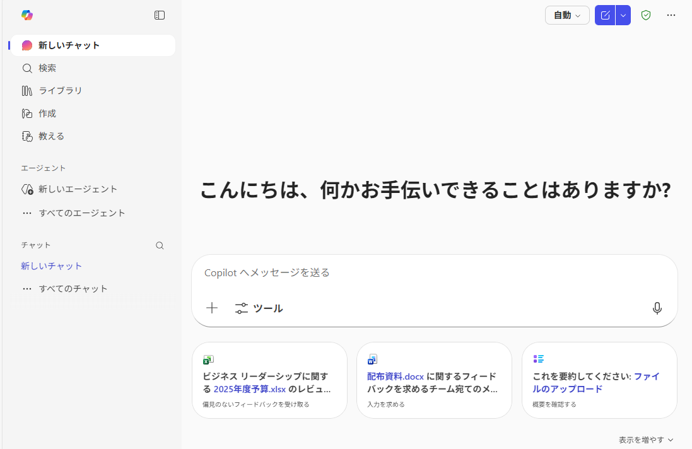
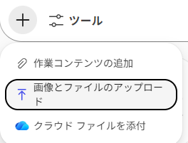
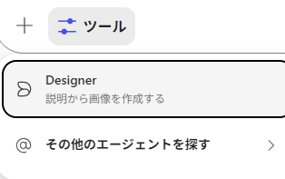

SD研修
大学事務のための生成AI
基礎と安全活用
Microsoft Copilot 365で「安全に」仕事を速くする
2026年2月20日(金) 14:00–15:00
下関市立大学 データサイエンス学部
データサイエンス学科
白濵 成希
今日のゴール（持ち帰り）
- AIの得意/不得意を知る
- 事故を防ぐ： 入力・検証・責任分担
- すぐ使える： プロンプトの型
- 事務の 具体例 を自部署に移植できる
今日の流れ
- 生成AI(LLM)とは
- AIの得意と不得意
- 安全活用
- プロンプト
- 活用例
- 業務活用を考える
- Q&A
LLMをひと言でいうと
- 大量の文章から学んだパターンで
「次に来そうな言葉」を確率的に並べて生成する道具
- だから得意：文章の下書き・整理・言い換え
- だから苦手：事実保証・最終判断
Copilot 365（今日の前提）
“時短”が出やすいタスク
- 案内メールの下書き／トーン調整
- 要約・箇条書きの作成（規程、通知、議事メモ）
- FAQ・返信テンプレの叩き台
- 手順書・チェックリストの骨子
- リスク・抜け漏れ観点の洗い出し
完成品を作るのではなく、たたき台を速くつくる
苦手：事故りやすい領域
- 個別対応 × 個人情報（成績、奨学金など）
- 合否・採否・評価（入試判定、人事評価…）
- 規程の断定（条文適用の可否を断言させない）
- 著作権・契約（そのまま外部発信しない）
最重要：役割分担
- Copilot：下書き・整理・観点出し
- 人：事実確認・判断・承認・対外責任
安全活用1：入力の最小ルール
原則：個人情報・機密は入力しない
削除／置換（（学生名）（学籍番号））
- 個人情報：氏名、学籍番号、成績、相談内容、医療・障がい など
- 機密：入試未公開、採点基準、人事、懲戒、契約交渉、未公表研究 など
安全活用2：検証の基本動作
出力を無条件に信用しない
- 一次情報確認（規程・要項・公式サイト・通知）
- 出典要求（根拠箇所を言わせる）
- 比較（3案出す → 差分を見る）
- レビュー（正確性/明確性/リスク）
- 最終承認は人（外部発信は必ず）
プロンプト3点セット
- 目的：何を、誰に、何のために
- 材料：前提、対象、貼り付ける文章
- 制約：禁止、トーン、文字数、出力形式、要確認表示
部署別の使いどころ（例）
- 教務：諸連絡、シラバス変更通知の要点整理
- 学生支援：FAQ叩き台、窓口導線の案内
- 入試：要項要点、返信テンプレ
- 総務：アジェンダ、議事メモ→ToDo表
- 財務：手順書→チェックリスト
- 研究支援：ルール要点、迷う点の整理
- 広報：プレスリリース構成、要約、トーン調整
365 Copilot

Copilot

緑の盾
エンタープライズ データ保護
学習に使われない

応答モード／モデルの切替
- 応答モード: 考える長さ
- モデル: 標準モデルか、最新モデル(GPT-5.2)か

モデル／応答の深さ
- 自動: 質問内容に応じて、Copilot が使うモデル
- クイック応答: シンプルで即時の回答を返す
- Think Deeper: より思考時間を使って、丁寧な回答を作る
GPT‑5.2
- クイック応答/Think Deeper
- ［さらに表示］から GPT‑5.2 を明示的に選択
- 指示追従、説明の明瞭さなどが改善
- 速さ優先: クイック
- 品質優先: Think Deeper
一時チャット
履歴に残さず、メモリを使わない

- プロンプトを試してみるとき
- その場限りのアイデア出し
- (注) 完全に痕跡ゼロではない
コンテンツの追加
- コンテンツ添付で、より具体的・詳細に回答
- 画像やファイルについても質問可能

作業コンテンツの追加
- Microsoft 365 上の 作業コンテンツ を検索して選択
- ファイル/メール/会議/人物など、関連する項目を挿入
- どの資料を根拠にしてほしいかを明示

画像/ファイル/クラウド利用
-
画像とファイルのアップロード : 端末のファイル選択画面を開いて、画像やファイルを複数アップロード
- (注意) 選択したファイルのコピーが OneDrive for Business に送信される
-
クラウド ファイルを添付: OneDrive 上のファイルを選択して添付
- 自分のファイルだけでなく、共有されたファイルや Teams 会議で共有されたファイルも選択できる
-
運用上の注意: 添付・アップロードする資料、個人情報や機密情報は入れない
Designerとエージェント
- Designer: 文章からAI生成画像を作成
- エージェント: Copilot の機能を拡張する仕組み

演習
大学事務想定利用例
- 【教務】履修登録・試験の案内メール下書き
- 【教務】シラバス変更通知の要点整理
- 【学生支援】奨学金/支援制度のFAQ叩き台
- 【学生支援】相談受付の案内（窓口導線）
- 【入試】募集要項の要点抜粋（広報用）
- 【入試】問い合わせ返信テンプレ案
- 【総務】会議議事メモ整理
- 【総務】研修案内文・参加募集文の作成
- 【財務】旅費精算手順の手順書たたき台
1. プロンプトもAIに作成させる
最強のプロンプトが得られる
大学事務職員として振舞ってください。
以下のプロンプトを、365 Copilot (GPT-5.2 Thinking) の性能を
最大限に発揮するように修正してください。
履修登録・試験の案内メール下書き
- 入力してよい情報（OK）: 制度説明、締切（公開情報）
- 入力してはいけない情報（NG）: 個別学生の履修状況
- 期待できる成果: 丁寧な案内文、箇条書き化
- 注意点: 日付・窓口・URLは人が最終確認
- 前半：最強プロンプトをつくるおまじない
- 後半：配布資料(大学事務想定利用例)からコピペ
2. 入力確認・微調整
あなたは大学の教務課（学部教務・履修/試験担当）の事務職員です。
以下の条件に従い、学生向けの「履修登録・試験」に関する案内メールの下書きを作成してください。
# 目的
学生が期限までに必要手続きを迷わず実行できるよう、丁寧で簡潔な案内メールを作る。
# 入力してよい情報（OK）
- 制度説明（一般的なルール、手続き手順、注意事項）
- 締切・期間（公開情報として与えられたもの）
- 手続き先（窓口名、場所、問い合わせ先：公開情報として与えられたもの）
- 公式URL（公開情報として与えられたもの）
# 入力してはいけない情報（NG）
- 個別学生の履修状況・成績・出欠・学籍情報など、特定個人に紐づく情報
- 推測による個別判断（「あなたは単位が足りないはず」等）
- 未確認の締切・URL・窓口情報を“断定”して書くこと（不明ならプレースホルダで残す）
# 文章トーン・品質基準
- 丁寧（です・ます調）、事務連絡として過不足なく
- 重要事項（締切・対象者・手順・注意点・問い合わせ）を明確化
- 箇条書きを多用し、読みやすい構造にする
- 可能なら「やることチェックリスト」を付ける
- 1通のメールとして自然（件名・宛名・本文・署名まで）
# 出力形式（必須）
1) 件名（候補を2つ）
2) 本文（以下の章立て）
- 冒頭：挨拶＋要旨（何の案内か）
- 対象者（例：〇年次/全学生/該当者 等。曖昧なら「対象者：［要確認］」）
- 手続き・試験の概要（短く）
- 期限・期間（太字で強調）
- 手順（番号付き）
- 注意事項（箇条書き）
- 問い合わせ先（窓口/メール/受付時間：不明なら［要確認］）
- 結び（協力依頼・締切再掲）
- 署名（教務課としての定型）
3) 最終確認が必要な項目リスト（人が必ず確認すべき箇所を列挙）
- 日付／締切、窓口情報、URL、対象者条件、提出方法 など
# 不足情報がある場合の扱い（必須）
- 不足や曖昧な情報は勝手に補完せず、本文中に［要確認：◯◯］の形で残す
- 併せて、作成後に「確認したい質問」を最大5つまで箇条書きで提示する
# 入力（私が与える情報）
- 送信対象：［例：全学部生／◯年次／該当者のみ 等］
- 履修登録：［期間・方法（Web/窓口）・注意点］
- 試験：［試験期間・追試/再試の扱い・持込可否の一般方針（ある場合）］
- 公式URL：［あれば］
- 窓口：［教務課、場所、受付時間、連絡先（あれば）］
- 補足：［例：システム停止、エラー時対応、よくある質問 等］
# ここから作成
上記条件に従って、案内メール下書きを作成してください。
3. アウトプット確認・微調整
学生の皆さん
教務課（履修・試験担当）です。
「履修登録（履修申告）」および「試験」に関する重要な手続き・日程についてご案内します。
期限を過ぎると受付できない場合がありますので、必ず期間内に対応してください。
────────────────────────
■ 対象者
対象者：［要確認：送信対象（全学部生／○年次／該当者のみ 等）］
※該当条件がある場合は、本メール末尾の注意事項も併せてご確認ください。
■ 手続き・試験の概要（要点）
・履修登録：［要確認：Web（システム名）／窓口／その他］にて、当該学期の履修科目を登録します。
・試験：試験期間中に、各科目の試験（定期試験）を受験します。科目ごとの日時・教室等は別途案内（またはシラバス/掲示）をご確認ください。［要確認：周知方法（LMS/掲示/ポータル 等）］
■ 期限・期間（重要）
【履修登録期間】**［要確認：開始日］（［要確認：曜日］）～［要確認：終了日］（［要確認：曜日］）［要確認：締切時刻］**
【試験期間】**［要確認：開始日］（［要確認：曜日］）～［要確認：終了日］（［要確認：曜日］）**
※システム利用（または窓口受付）の可否は時間帯により異なる場合があります。必ず余裕をもって手続きを行ってください。
────────────────────────
■ 手順（履修登録）
1. ［要確認：ポータル／履修登録システム］にログインします。
2. 履修登録画面から、今学期に履修する科目を選択・登録します。
3. 登録内容を確認し、確定（登録完了）します。
4. 登録後、時間割や登録結果（受付番号/完了表示）を必ず保存・確認してください。
5. 必要に応じて、修正期間内に科目の追加・削除を行います。［要確認：修正期間の有無・期間］
■ 手順（試験）
1. 試験期間・各科目の試験情報（日時・教室・形式）を確認します。［要確認：確認先（LMS/ポータル/掲示 等）］
2. 受験に必要な持ち物（学生証等）を準備します。
3. 当日は時間に余裕をもって指定の教室へ入室してください。
4. 欠席や不具合が生じた場合は、速やかに教務課へ連絡してください。
────────────────────────
■ 注意事項（必ず確認）
【履修登録】
・登録内容の不備（未確定、登録漏れ等）があると、成績評価の対象外になる場合があります。
・履修上限（CAP制）や履修条件（履修要件/前提科目）がある場合は、事前に確認してください。［要確認：周知先（履修要項/学生便覧 等）］
・システム混雑が予想されるため、締切直前の操作は避けてください。
【試験】
・学生証は必携です（忘れた場合の対応：［要確認］）。
・追試験/再試験の扱い：［要確認：追試・再試の有無、申請条件、手続き期限、必要書類］
・持込可否（資料・電卓等）は科目により異なります。各科目の案内に従ってください。［要確認：一般方針がある場合は追記］
・体調不良等で受験できない場合の連絡・手続き：［要確認：連絡先と手順］
【補足】
・システム停止（メンテナンス）予定：［要確認：日時／有無］
・エラー等が発生した場合：画面のスクリーンショットを保存のうえ、［要確認：連絡先］へご連絡ください。
────────────────────────
■ やることチェックリスト（簡易）
□ 履修登録期間を確認した
□ 履修科目を登録し「確定」まで完了した
□ 登録結果（完了表示/受付番号/時間割）を保存した
□ 試験期間・科目別試験情報を確認した
□ 追試/再試の条件・申請手順を確認した（該当者）
□ 当日の持ち物（学生証等）を準備した
────────────────────────
■ 問い合わせ先
［要確認：窓口名（教務課／学部教務係 等）］
場所：［要確認：キャンパス名・建物・階・窓口番号］
受付時間：［要確認：平日○:○○～○:○○］（※土日祝：［要確認］）
メール：［要確認：メールアドレス］
電話：［要確認：電話番号］
参考URL：［要確認：公式URL］
────────────────────────
以上です。
期限内の手続きにご協力をお願いいたします。
【履修登録締切】**［要確認：終了日］［要確認：締切時刻］**（再掲）
――――――――――――――――
［要確認：大学名］［要確認：学部名］ 教務課（履修・試験担当）
住所：［要確認］
TEL：［要確認］ E-mail：［要確認］
受付時間：［要確認］
――――――――――――――――
宿題：自分の業務で1本作る
- 「文章化が面倒」な業務を1つ選ぶ
- テンプレに従って、最強プロンプトを作るプロンプトを書く
- 最強プロンプトを入力する
- 出力を見て、微調整して改善
- レビュー（正確性/明確性/リスク）
演習テンプレ（コピペ）
大学事務職員として振舞ってください。
以下のプロンプトを、365 Copilot (GPT-5.2 Thinking) の性能を
最大限に発揮するように修正してください。
目的：
背景：
材料：
制約：
出力形式：
- 制約に「NG入力」「不明は［要確認］」「です・ます」「文字数」「箇条書き」などを入れると安定
まとめ：今日の3つだけ
- Copilotは 下書き・整理・観点出し
- 事故を防ぐ：入力NG＋検証＋最終承認は人
- 再現性：目的/材料/制約/出力形式 を書く